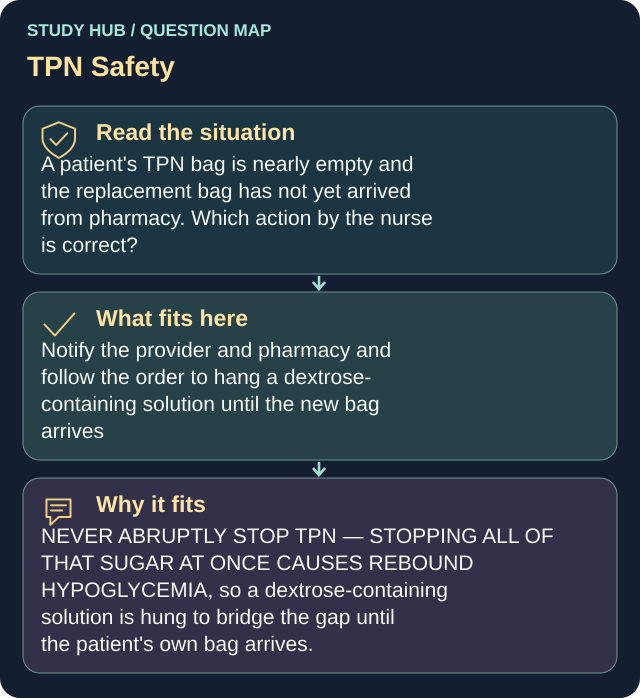

A patient's TPN bag is nearly empty and the replacement bag has not yet arrived from pharmacy. Which action by the nurse is correct?
Notify the provider and pharmacy and follow the order to hang a dextrose-containing solution until the new bag arrives
NEVER ABRUPTLY STOP TPN — STOPPING ALL OF THAT SUGAR AT ONCE CAUSES REBOUND HYPOGLYCEMIA, so a dextrose-containing solution is hung to bridge the gap until the patient's own bag arrives.
Hanging another patient's bag is a MED ERROR: every TPN bag is mixed in pharmacy for one specific patient with that patient's name on it, which is also why a second nurse must verify the bag before it is hung. Slowing the infusion to a trickle is not a safe workaround either, because infusing TPN too slowly gives inadequate nutrition and can also drop the blood glucose. The nurse does not stop or pause a TPN infusion on her own unless she is working with the line itself or suspects a clot or migration.
Why the other answers do not fit
- Abruptly discontinue the TPN and flush the central line with normal saline
The nurse does not stop or pause a TPN infusion on her own unless she is working with the line itself or suspects a clot or migration.
- Borrow the TPN bag prepared for another patient on the unit who has similar additives
Hanging another patient's bag is a MED ERROR: every TPN bag is mixed in pharmacy for one specific patient with that patient's name on it, which is also why a second nurse must verify the bag before it is hung.
- Slow the current bag to a keep-vein-open rate so it lasts until the new bag arrives
NEVER ABRUPTLY STOP TPN — STOPPING ALL OF THAT SUGAR AT ONCE CAUSES REBOUND HYPOGLYCEMIA, so a dextrose-containing solution is hung to bridge the gap until the patient's own bag arrives.
